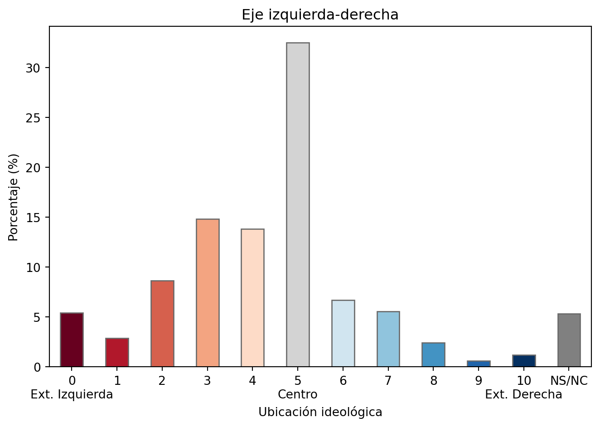
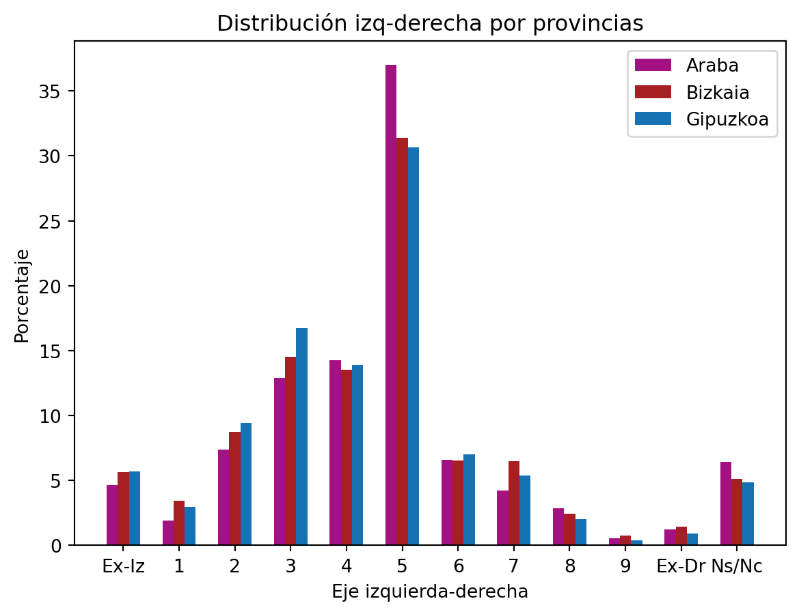
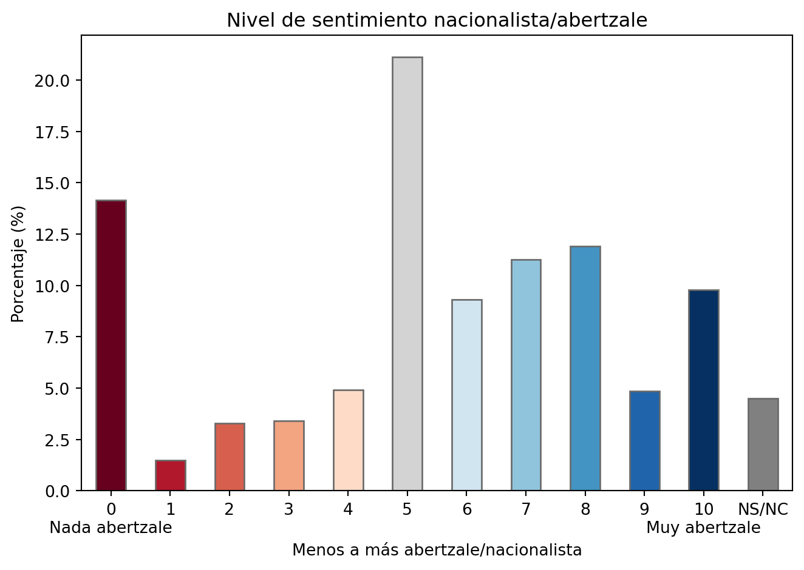
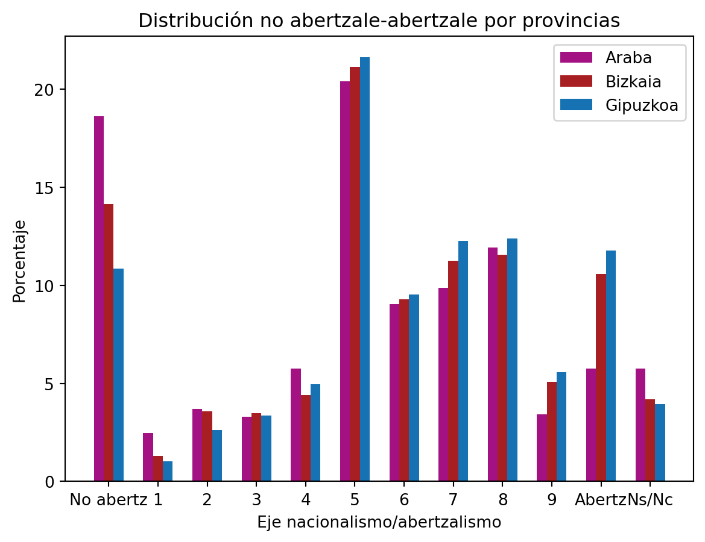

import pandas as pd
import matplotlib.pyplot as plt
import numpy as np
from src.config import p33_tag_map, df, p32_tag_map
from src.charts.bar import create_provinces_distribution_bar_chart, create_0_to_10_percentage_bar_chartAnálisis del sociómetro vasco
Sociómetro vasco
El Sociometro_vasco, es un estudio periódico oficial que realiza un cuestionario sobre una población amplia desde 1996. Los datos de la encuesta son compartidos en formato CSV, aquí el enlace.
La encuesta se lleva a cabo por la lehendakaritza. Esta es su descripción en el sitio web:
Serie de estudios que comenzó en 1996 y que intenta ofrecer un retrato de la realidad social vasca. Consta de un cuerpo común (actitudes políticas y valoración de la situación) y una o más partes con temas diversos. Su enfoque es descriptivo, evolutivo y comparativo. El objetivo no es sólo conocer cómo somos las vascas y los vascos, sino también cómo vamos cambiando, y en qué nos parecemos o nos diferenciamos de las y los habitantes de la totalidad del Estado y de los países de la Unión Europea.
Desde ahí, el Gobierno Vasco elabora un PDF de unas 80 páginas con gráficos y tablas sobre los datos.
Setup
Importaciones:
Eje izquierda-derecha del 0 al 10
El eje de izquierda a derecha se encuentra claramente orientado a la izquierda con un porcentaje notable de encuestados/as en el centro
create_0_to_10_percentage_bar_chart(
df, "p32", "Eje izquierda-derecha", "Ubicación ideológica", p32_tag_map
)
Diferencias por provincia
En cuanto al eje de izquierda y derecha, se encuentra una diferencia significativas en cuanto al centro justo (5 del 0 al 10) en Araba, así como un porcentaje ligeramente superior en cuanto a la población que “No sabe/no contesta”.
Se encuentran ciertas diferencias destacables en algunas de las cuestiones cuando se comparan las respuestas por provincia.
create_provinces_distribution_bar_chart(
df,
"Eje izquierda-derecha",
"Porcentaje",
"Distribución izq-derecha por provincias",
"Ex-Iz",
"Ex-Dr",
"p32",
)
Eje abertzale/nacionalista del 0 al 10
En cuanto al sentimiento nacionalista o abertzale del 0 al 10
create_0_to_10_percentage_bar_chart(
df,
"p33",
"Nivel de sentimiento nacionalista/abertzale",
"Menos a más abertzale/nacionalista",
p33_tag_map,
)
Diferencias por provincia
También son notables las diferencias
create_provinces_distribution_bar_chart(
df,
"Eje nacionalismo/abertzalismo",
"Porcentaje",
"Distribución no abertzale-abertzale por provincias",
"No abertz",
"Abertz",
"p33",
)